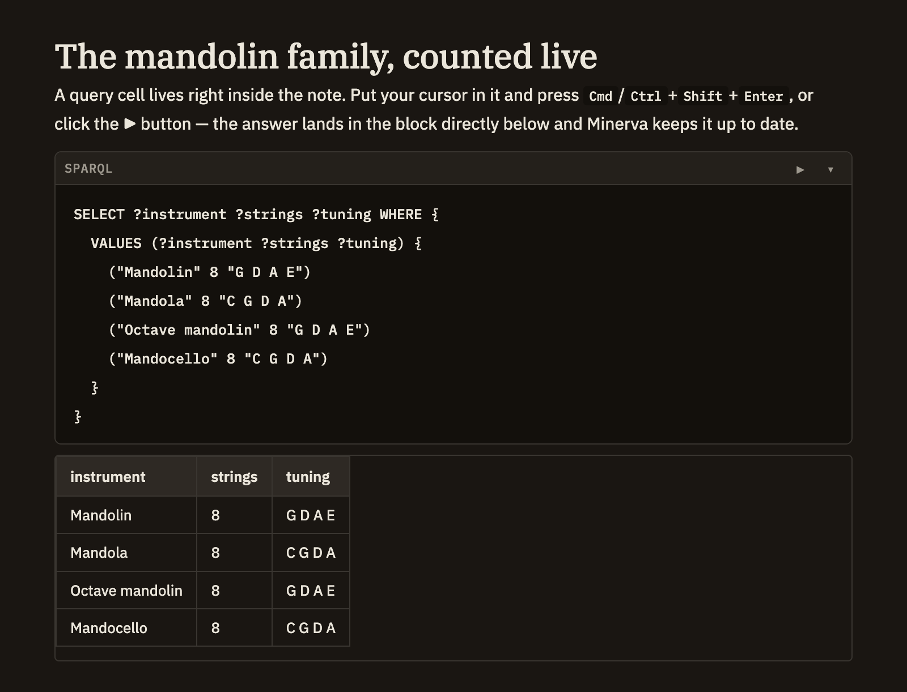

Docs/Working with data/Runnable cells
Runnable cells
A query written inside a note isn't just an example to read — it's live. Run it right where it sits, and the answer appears just below. It's a natural way to keep a question and its answer together in your notes.
Running a query
Start a query cell and mark it as a SPARQL or SQL query. A run button appears beside it — click it, or place your cursor in the cell and press Cmd/Ctrl+Shift+Enter. The results appear in their own block directly underneath. Minerva keeps that results block up to date for you, so there's no need to write one yourself.

Shorthand that's always ready
When you write a SPARQL query, you can jump straight to asking your question — the common shorthands for referring to your notes, tags, links, claims, titles, dates, and other everyday concepts are already available. You don't have to declare them each time.
Querying your tables
Any table you add to your notes can be queried with SQL as soon as you save it — the column headings become the fields you can ask about. See Tables & CSV for how tables work, and the Query menu & panel for ready-made queries that show you a table's columns before you write against it.